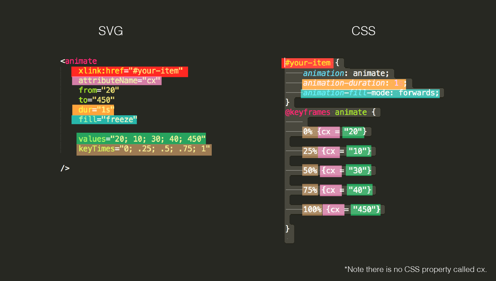
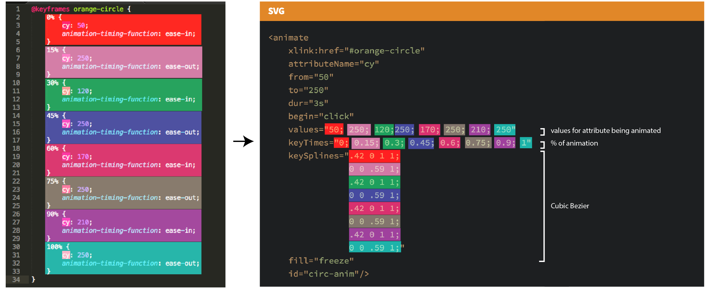

Intro SVG Animation
CSS, SMIL, and a little Snap
By: Ryan Brownhill / @ryan_brownhill
What is SVG
Scalable Vector Graphics.
Exporting SVG's
Sketch
Adobe Illustrator
many more applications.
Embedding SVG's
img

background: url
.class-name {background:url(thesvg.svg);}object
embed
iframe
inline
SMIL & CSS
SMIL?
SMIL means Synchronized Multimedia Integration Language, which is an XLM-based language
Why SMIL?
Can animate attributes that CSS can't
Works in all browsers except IE and Opera Mini

SMIL Animation Tags
SMIL -> CSS

Adding Keyframes
Adding Easing Curves
Walk through
Snap.svg & GSAP
Snap.svg
Javascript library for SVG's and animations.
Greensock (GSAP)
Javascript animation platform
Performance
Great benchmark breakdown of the different SVG animation tools by Sarah Drasner
My Process
- Define Shape/Path for Animation
- Define Property to Animate
- List out Property Values
- Define Percentage over time for those values
- Map out the easing curves between keyframes